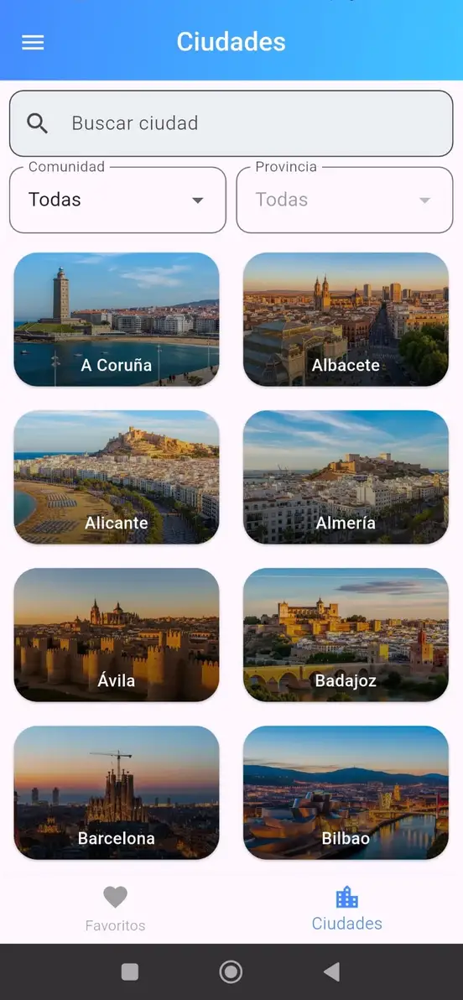
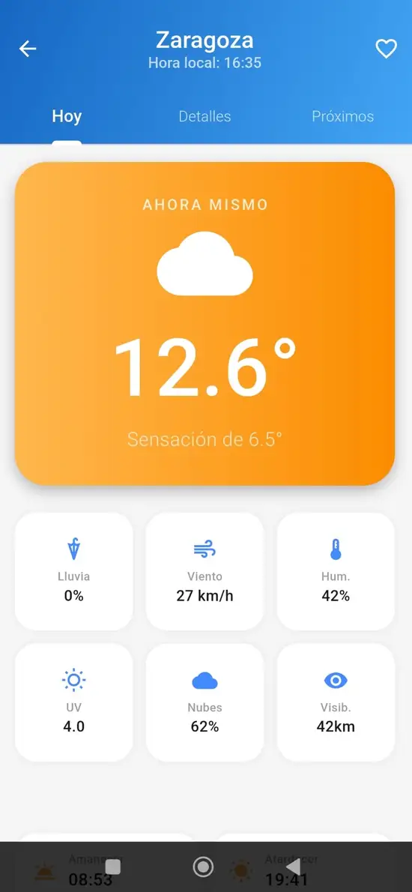
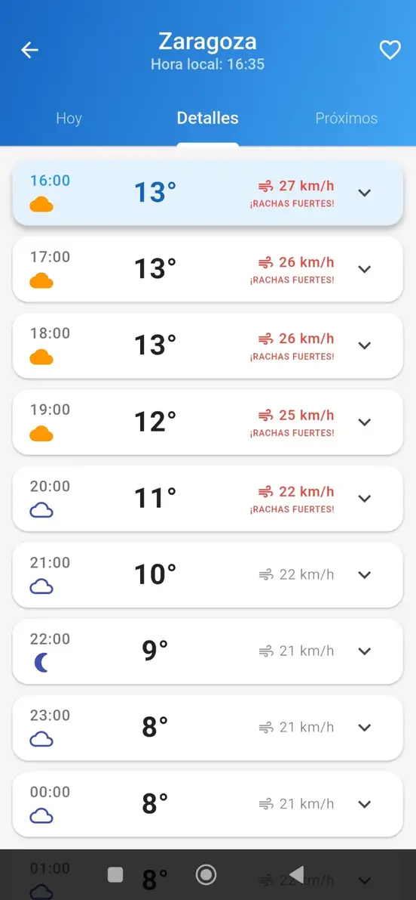
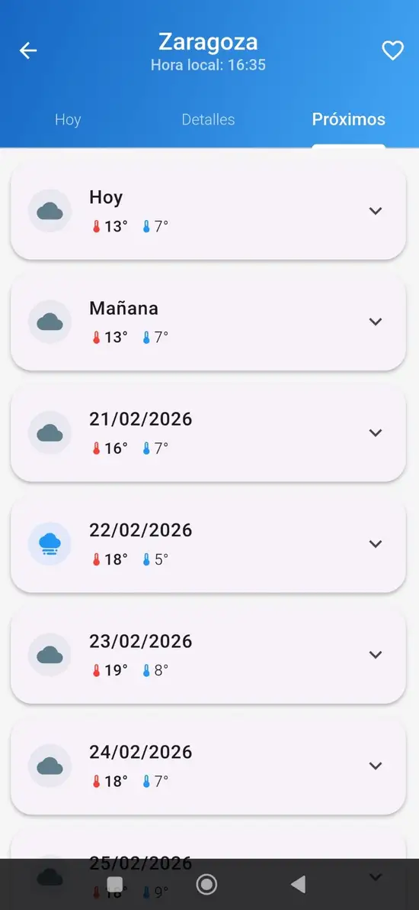

Consulta el tiempo sin distracciones ni mapas complejos.
Ecos Meteorológicos es una aplicación ligera pensada para consultar el estado del tiempo de forma rápida y clara. El objetivo es ofrecer información esencial sin sobrecargar la interfaz con gráficos innecesarios o datos difíciles de interpretar.
Consulta el estado actual de tu ubicación.
Pronóstico sencillo para los próximos días.
Acceso rápido a tus ciudades habituales.
Actualmente la base de datos incluye una selección limitada de ciudades. Si no encuentras la tuya, estaré encantado de añadirla.
Puedes solicitármelo y la incluiré en próximas actualizaciones.



☀️ Datos claros, descarga segura.